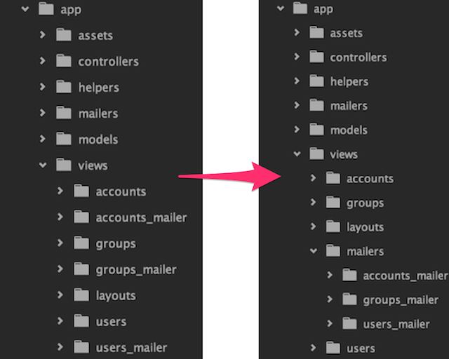

views/mailers directory
app/views contains both controller and mailer directories and becomes cluttered as your application grows. I keep app/views better organized by moving all my *_mailer directories underneath app/views/mailers, which is accomplished with one line of code:
# app/mailers/application_mailer.rb
class ApplicationMailer < ActionMailer::Base
default template_path: lambda { |e| "mailers/#{e.class.name.underscore}" }
end
Now UsersMailer templates go into app/views/mailers/users_mailer.

It just feels better this way.